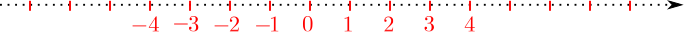
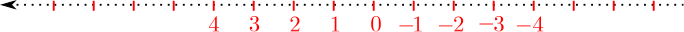
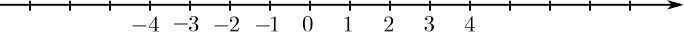
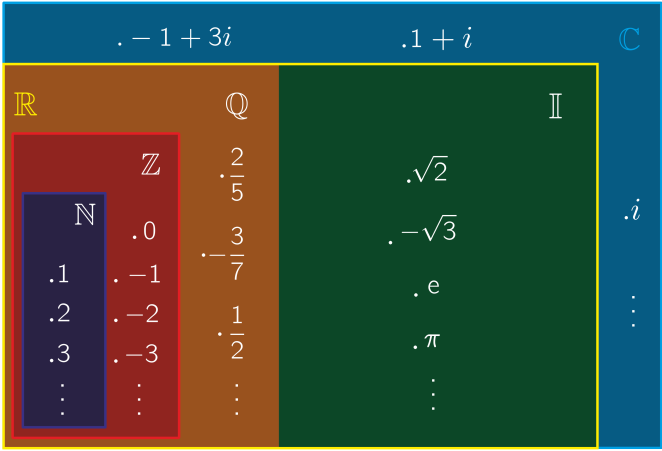

Los números naturales:
\[ \N=\{ 1,2,3,4,5,\ldots \} \]
Es aquel conjunto ordenado cuyo primer elemento es el 1 y además los siguientes elementos después del 1 son obtenidos a partir del anterior más uno.
Los enteros enteros:
\[ \Z=\{\ldots,-4,-3,-2,-1,0,1,2,3,4,\ldots \} \]
Si denotamos por \( -\N=\{ \ldots,-4,-3,-2,-1\} \) , entonces \( \Z=-\N\cup\{0\}\cup\N \).
podemos representar gráficamente los números enteros como sigue

la flecha indica el sentido en que los número van aumentando.
También podemos representar como sigue

estas no son las únicas maneras de representar gráficamente a los números enteros, también podemos poner la recta puntead de forma vertical o con alguna pendiente determinada.
La elección de la representación dependerá del contexto sobre el cual se esté trabajando, por convención se elige la primera, pero que esto no influya en su imaginación.
Los número racionales:
\[ \Q=\enll{\fr{a}{b}\mid a\in\Z,b\in\N} \]
Los números irracionales:
\[ \I=\{ x\mid x \lr{ tiene representación decimal no periódica} \} \]
Los números reales: \( \R=\Q\cup \I \).
Lo números reales también se pueden representar gráficamente como sigue

esta gráfica se le conoce como la recta numérica.
Los número complejos: \( \Co=\{ a+bi\mid a,b\in\R, i^2=-1 \} \)
Una figura que puede darnos una idea aproximada de como se contienen estos conjuntos numéricos es la siguiente.
